Locații de nuntă în județul Argeș
- locații în director
- 26
- cu cazare în registrul SITUR
- 8
- medie ponderată Google
- 4,4 / 5
- evaluări Google
- 10.276
Cum alegi unde mergi la vizionare
O vizionare în Curtea de Argeș și una la Căpățâneni cer itinerare diferite. Verificați în fișă satul exact, mai ales când întâlniți numele Căpățânenii Ungureni și Căpățânenii Pământeni. Puneți adresa completă în invitația de probă înainte de a calcula transportul.
În Curtea de Argeș, la LA CONAC, oaspetele citat în fișă pomenește terasa acoperită și parcarea. Dacă rudele vin pe rând, verificați de la ce masă puteți vedea intrarea ca să le întâmpinați. Pentru o vizită la Căpățâneni, puneți în aceeași zi și o oprire la cazarea pe care o aveți în vedere pentru familie. Astfel aflați cât din program îl ocupă transportul.
Două adrese pentru o zi de vizionări
Pe hartă, între aceste două proprietăți sunt 4,7 km în linie dreaptă. Deschide indicațiile de drum din fișe ca să vezi traseul pe șosea înainte de a stabili a doua întâlnire.
- Hotel Subcarpati · Strada Cuza Vodă 75e, 115300 Curtea de Argeș
- Perla Argesului - pensiune cu piscină lângă Curtea de Argeș · Sat Dobrotu, Strada Principala DC252, Perla, 117009 Arges
Explorează după localitate
Toate locațiile din județul Argeș
Ordinea ține cont de nota Google și de numărul evaluărilor. Cum calculăm ordinea
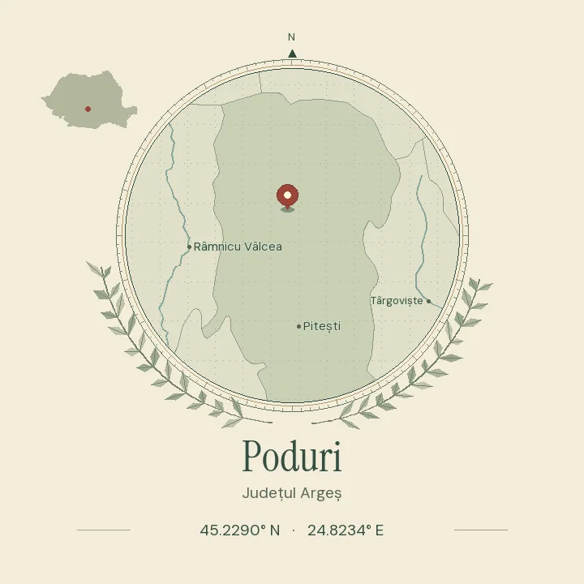
Hartă ilustrată Poduri · Bed & Breakfast
Conacul Doamnei (comuna Corbi, Arges - pensiune agroturistica)
La Conacul Doamnei din Poduri, un oaspete își amintește de mâncarea pregătită de gazdă și de echipa ei, dar și de verdeața din jurul spațiului de joacă.
str. Unirii nr. 7, Poduri+40 758 711 291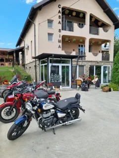
Fotografie a locației · Sursa fotografiei Curtea de Argeș · Hotel
Casa Sima
Pensiune pe strada Progresului din Curtea de Argeș, cu nota 4,9 și camere de la 200 de lei. Potrivită pentru cazarea invitaților, nu ca sală.
Strada Progresului nr 29c, 115300 Curtea de Argeș+40 749 488 982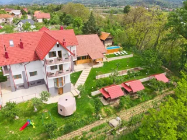
Fotografie a locației · Sursa fotografiei Arges · Pensiune
Perla Argesului - pensiune cu piscină lângă Curtea de Argeș
Perla Argesului - pensiune cu piscină lângă Curtea de Argeș, Arges. Pentru fiecare contează intervalul rezervat și cine mai are acces.
Sat Dobrotu, Strada Principala DC252, Perla, 117009 Arges+40 721 270 992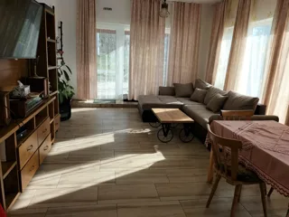
Fotografie a locației · Sursa fotografiei Nucșoara · Pensiune
Conacul Doamnei Nucșoara
Pensiune în Nucșoara, la poalele Moldoveanului, cu foișor, ciubăr și gazdă atentă la alergii. Ce să afli pentru o reuniune restrânsă.
Str. Gruiului nr. 18A, 117540 Nucșoara+40 764 132 929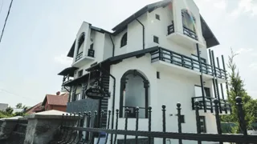
Fotografie a locației · Sursa fotografiei Curtea de Argeș · Bed & Breakfast
Boutique Hotel Casa Medievală, Curtea de Argeș,Transfăgărășan
B&B cu terasă și foișor în Curtea de Argeș, 4,8 din 367 de evaluări. Oaspeții au organizat aici primirea mirilor la nași; camerele sunt mici.
Str. Albești 6, 115300 Curtea de Argeș+40 771 075 664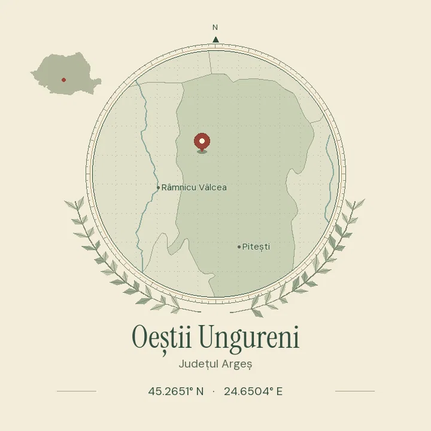
Hartă ilustrată Oeștii Ungureni · Hotel
Pensiunea Nicky
Pensiunea Nicky, Oeștii Ungureni. Oaspeți care au parcurs Transfăgărășanul au ales Casa Nicky pentru oprirea de după drum.
Transfăgărășan, 117279 Oeștii Ungureni+40 721 223 677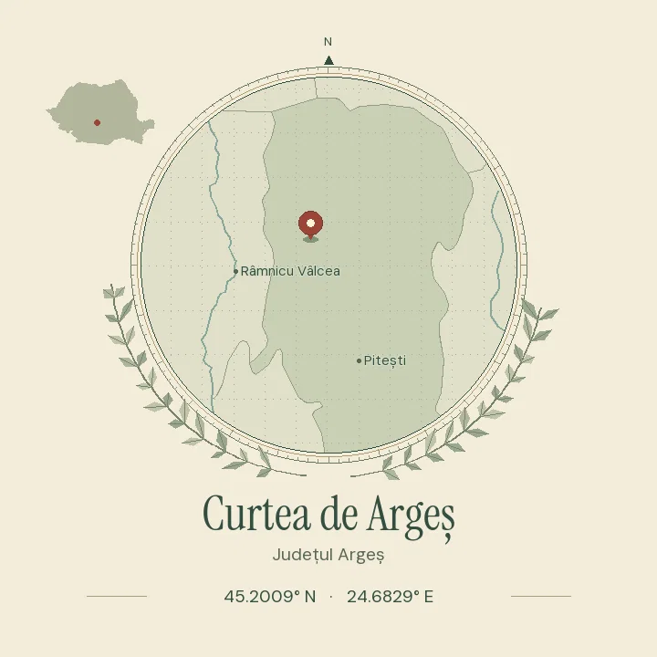
Hartă ilustrată Curtea de Argeș · Pensiune de familie
PENSIUNEA LUMINITA
PENSIUNEA LUMINITA. O familie a folosit pensiunea Luminița pentru o singură noapte între un drum pe Transalpina și plecarea spre Transfăgărășan.
CERBURENI, 115300 Curtea de Argeș+40 740 709 848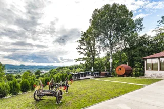
Fotografie a locației · Sursa fotografiei Curtea de Argeș · Pensiune
Pensiunea La Maria si Ioana
Pensiunea La Maria si Ioana, Curtea de Argeș. Un oaspete descrie cabana în care a stat ca parte dintr-un complex cu mai multe căsuțe.
Strada Anghelești Nr.11, 115300 Curtea de Argeș+40 748 193 085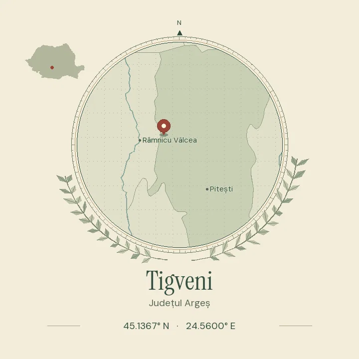
Hartă ilustrată Tigveni
CONAC TIGVENI
CONAC TIGVENI, Tigveni. La Conacul Tigveni, experiența descrisă de o familie iarna pune ciubărul cald în centrul șederii.
Com, Tigveni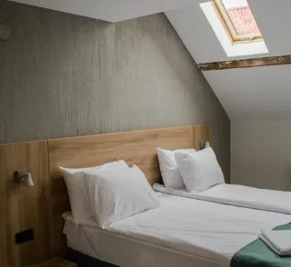
Fotografie a locației · Sursa fotografiei Curtea de Argeș · Cazare
Hotel Subcarpati
Hotel Subcarpati, Curtea de Argeș. Fațada vitrată a hotelului Subcarpați și gazonul din față arată diferit în fotografii în funcție de unghi.
Strada Cuza Vodă 75e, 115300 Curtea de Argeș+40 725 740 755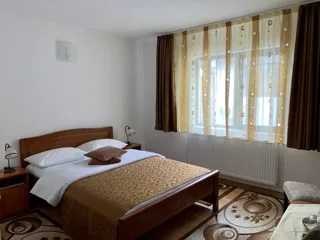
Fotografie a locației · Sursa fotografiei Curtea de Argeș · Pensiune
Pensiunea Ruxi
Pensiunea Ruxi, Curtea de Argeș. La Ruxi, un oaspete pune în centrul experienței curtea cu flori și faptul că proprietarii i-au întâmpinat personal.
Strada Negru Vodă 104, 115300 Curtea de Argeș+40 727 827 675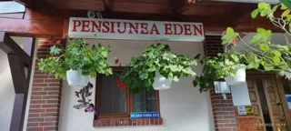
Fotografie a locației · Sursa fotografiei Curtea de Argeș · Pensiune
Pensiunea Eden
Pensiunea Eden. Un turist care a stat la Eden a lăsat mașina în parcarea pensiunii și a apreciat plimbarea printre casele dinspre Curtea Domnească.
Strada Negru Vodă 153, 115300 Curtea de Argeș+40 747 887 577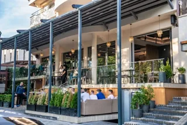
Fotografie a locației · Sursa fotografiei Curtea de Argeș · Hotel
THR Hotel
THR Hotel, Curtea de Argeș. Un client care s-a întors la THR a ales apartamentul și spune că micul dejun nu era organizat ca bufet.
Bulevardul Basarabilor 125, 115300 Curtea de Argeș+40 248 729 672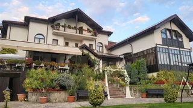
Fotografie a locației · Sursa fotografiei Curtea de Argeș · Bed & Breakfast
Pensiunea Casa Domneasca
Pensiunea Casa Domneasca. Dacă vă doriți animalul de companie în fotografiile de nuntă, explicați dinainte cât timp ar sta acolo și cine îl preia după ședință.
Strada Plopiș 4, 115300 Curtea de Argeș+40 755 134 819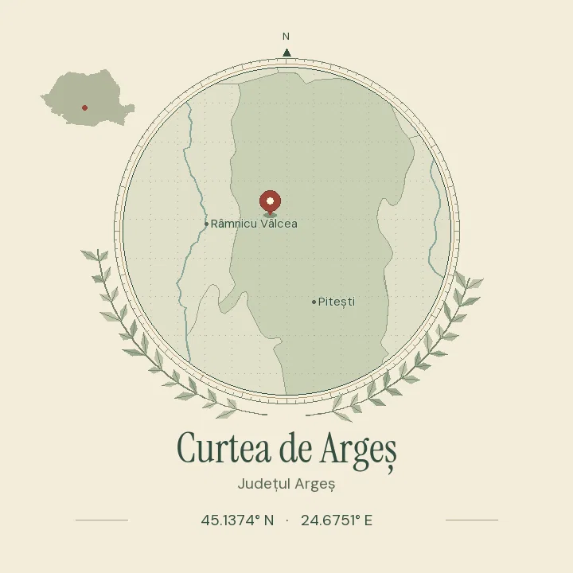
Hartă ilustrată Curtea de Argeș · Restaurant cu specific românesc
LA CONAC
La Conac din Curtea de Argeș, o familie își amintește de pâinea făcută în casă, șnițelul subțire și clătitele preferate de copil.
Strada Negru Vodă 42, 115300 Curtea de Argeș+40 740 077 889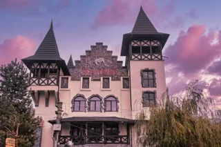
Fotografie a locației · Sursa fotografiei Căpățânenii Ungureni · Castel
Castelul Dracula Transfăgărășan
Muzeu-castel dedicat lui Vlad Țepeș la Căpățânenii Ungureni, cu salon de până la 120 de persoane. Ce spun vizitatorii și invitații.
Principala 191, 117042 Căpățânenii Ungureni+40 745 473 381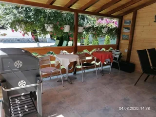
Fotografie a locației · Sursa fotografiei Curtea de Argeș · Bed & Breakfast
Pensiunea Ioana***
Pensiunea Ioana***, Curtea de Argeș. La adresa de pe strada Negru Vodă, o rezervare cu camere și o întâlnire în grădină merită discutate împreună.
Strada Negru Vodă 102, 115300 Curtea de Argeș+40 768 504 204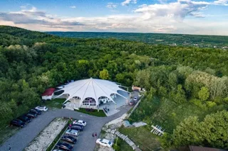
Fotografie a locației · Sursa fotografiei Topoloveni · Local pentru evenimente
Gradina Eforie Topoloveni
Grădină de evenimente în Topoloveni, cu nunți descrise în recenzii și o sală rustică nouă, „La salcâmi”. Verifică și camerele pentru invitați.
Strada Ion Răducanu 22, 115500 Topoloveni+40 723 336 455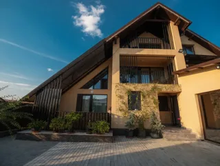
Fotografie a locației · Sursa fotografiei Curtea de Argeș · Pensiune
Pensiune Relax
Pensiune Relax. La Relax, un oaspete descrie camere care se deschid spre balcon sau terasă și o curte mare, într-o zonă liniștită din Curtea de Argeș.
Strada Vasile Lupu 26, 115300 Curtea de Argeș+40 740 619 712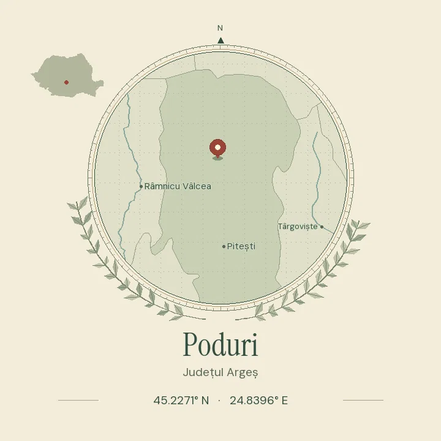
Hartă ilustrată Poduri · Vilă
Pensiunea La Conac
Pensiunea La Conac, Poduri. Casa albă are două balcoane cu balustrade închise la culoare și o intrare acoperită.
DC272B 3, Poduri+40 745 278 656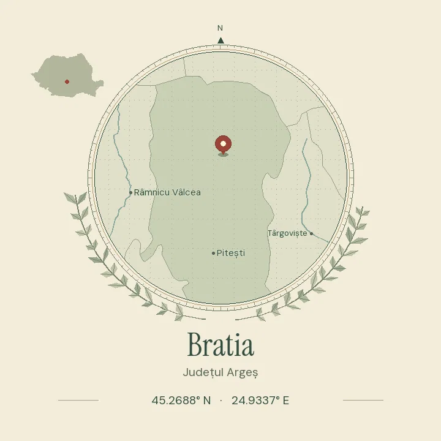
Hartă ilustrată Bratia · Cazare
Conacul Sfânta Elena
Peluzele de la Conacul Sfânta Elena fac parte dintr-o curte în care un oaspete a descoperit mai multe locuri de stat în aer liber.
117116 Bratia+40 744 347 332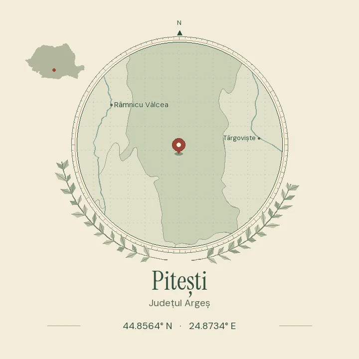
Hartă ilustrată Pitești · Hotel
ibis Styles Pitesti
ibis Styles Pitesti, Pitești. Un călător a povestit că la ibis Styles din Pitești a fost primit la două noaptea după un drum obositor.
Piața Muntenia 3, 110063 Pitești+40 737 512 420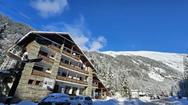
Fotografie a locației · Sursa fotografiei Zona Arefu · Pensiune
Conacul Ursului
Conacul Ursului. Dacă doriți ca invitații de pe terasă să audă jurămintele rostite fără microfon, faceți o scurtă probă cu cineva așezat în ultimul rând.
Transfăgărășan km 104+40 752 877 877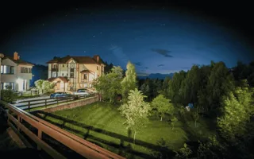
Fotografie a locației · Sursa fotografiei Mățău · Pensiune
Pensiunea Conacul de pe deal
La Mățău, o familie cazată la Conacul de pe Deal își amintește meniul pregătit de gazde, inclusiv salată de vinete, ciorbă de perișoare, sarmale și cozonac.
Principala 38 A, 117484 Mățău+40 724 818 101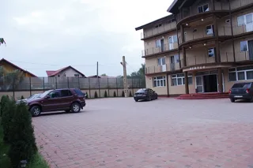
Fotografie a locației · Sursa fotografiei Bascov · Hotel
Pensiunea Heaven
Un cuplu cazat la mansardă pentru o noapte descrie pensiunea Heaven ca fiind puțin retrasă de la drumul național și amintește spațiul generos pentru parcare.
Strada Zăvoiului Nr. 1, 117045 Bascov+40 744 324 885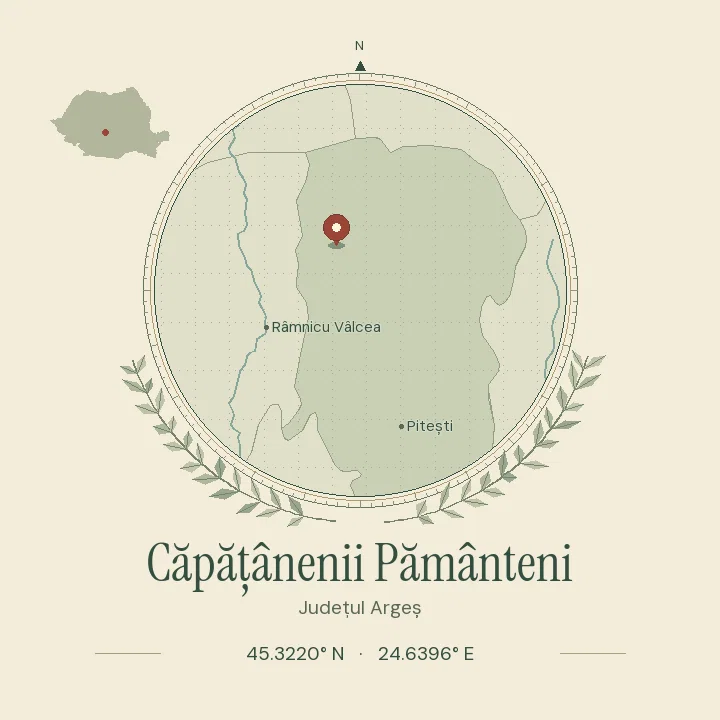
Hartă ilustrată Căpățânenii Pământeni · Pensiune
Cazare Transfăgărășan - Pensiunea Iuliana
Pensiune simplă în Căpățânenii Pământeni, cu tabere de copii lăudate, dar camere criticate. Nota 3,3 din 514 de evaluări; ce să verificați la cazare.
principala nr 99, 117041 Căpățânenii Pământeni+40 744 658 398
Întrebări despre locațiile din județul Argeș
Unde pot dormi invitații în județul Argeș?
În registrul de cazare SITUR găsim Conacul Doamnei Nucșoara (10 locuri de cazare), Boutique Hotel Casa Medievală, Curtea de Argeș,Transfăgărășan (16 locuri de cazare), Pensiunea Nicky (8 locuri de cazare). Verifică ce camere sunt libere pentru noaptea evenimentului.
Ce proprietăți din județul Argeș au grădină sau terasă?
Casa Sima (grădină, terasă, foișor); Perla Argesului - pensiune cu piscină lângă Curtea de Argeș (grădină, foișor); Conacul Doamnei Nucșoara (foișor). Cere administratorului condițiile de folosire pentru o petrecere privată.
Care locație din județul Argeș are cele mai multe evaluări Google?
Conacul Ursului are 1.688 de evaluări în profilul Google folosit la documentare. Evaluările acoperă și alte experiențe la proprietate, inclusiv vizitele fără eveniment.
Unde apare o intrare accesibilă în județul Argeș?
Profilurile Google indică o intrare accesibilă la Gradina Eforie Topoloveni. Pentru o cununie în exterior, cere detalii despre traseul dintre intrare și zona cu scaune.